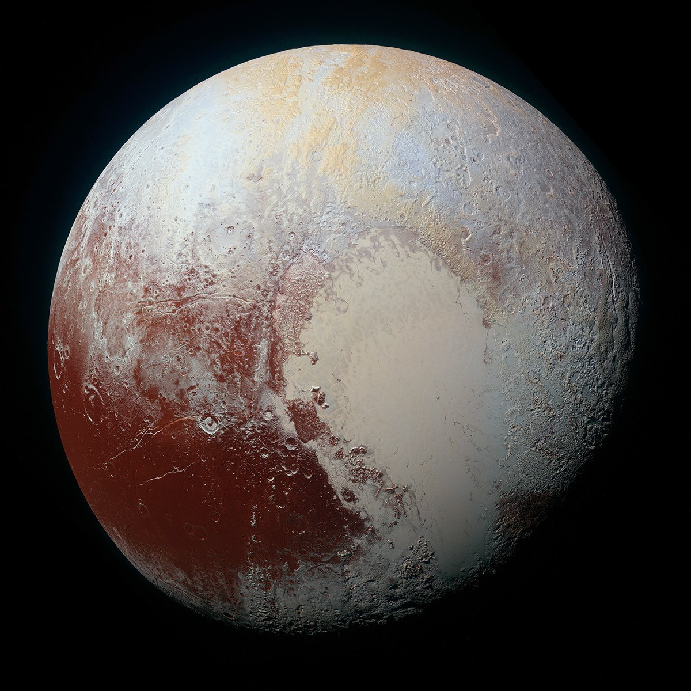

A / SPUTNIK PLANITIA
那颗“心”，还在缓慢流动。
汤博区勾勒出熟悉的心形轮廓。它的西半部是斯普特尼克平原，覆盖着富含氮的冰；冰原上的多边形纹理，是研究缓慢对流与表面更新的重要线索。
NASA · 冰原与地质活动FIELD NOTES · DWARF PLANET / 01
太阳很远，
故事还在继续。
柯伊伯带 · 矮行星
BEYOND NEPTUNE, A WORLD WITH A HEART.

当前设备使用图文模式。下方影像与轨道演示仍可浏览。
拖动旋转 · 滚轮 / 双指缩放
影像拼接与可视化照明 · 自转速度经过加快
约为地球直径的五分之一
一年，足以跨越几代人
平均距离下的近似时间
新视野号 · 7 月 14 日
01 / A LANDSCAPE MADE OF ICE
把目光从轮廓移向表面。
三张影像，读懂三种不同的冰与光。
汤博区勾勒出熟悉的心形轮廓。它的西半部是斯普特尼克平原，覆盖着富含氮的冰；冰原上的多边形纹理，是研究缓慢对流与表面更新的重要线索。
NASA · 冰原与地质活动飞掠之后回望，冥王星显露出一圈蓝色薄雾。微小颗粒散射阳光，让极稀薄的大气变得可见；这圈蓝色并不意味着它拥有地球一样的空气。
NASA · 蓝色薄雾在极低温度下，水冰能像岩石一样坚硬。低角度阳光勾出崎岖山峰与平坦冰原，地平线上还能看到层层薄雾。熟悉的水，在这里扮演着陌生的角色。
NASA · 冰山与薄雾TWO WORLDS. ONE RHYTHM.
冥卫一的直径约为冥王星的一半。它们共同围绕两者之间的质心运动，而这个中心位于冥王星表面之外。
它们还彼此潮汐锁定：公转与各自的自转大约都是 6.4 个地球日，所以总以同一面相对。图中的小点，帮助你追踪这两张“面对彼此的脸”。
演示只包含冥王星与冥卫一，周期加快；二维圆点略放大，质心位置按近似质量比绘制。它与上方三维视图是独立的教学演示。
03 / A LONG WAY TO A FIRST HELLO
克莱德·汤博在不同时刻拍摄的底片中，找到了缓慢移动的光点。那个遥远世界，第一次进入人类的视野。
1 月 19 日发射。探测器踏上长途旅程，随后借助木星引力加速，驶向太阳系更远处。
新视野号飞掠冥王星系统，带回冰原、山脉、薄雾与冥卫一的细节。一次短暂经过，改写了我们对这里的想象。
1 月 1 日，探测器又飞掠了阿罗科思。冥王星之外，还有许多保存太阳系早期线索的小世界。
04 / A DIFFERENT CATEGORY, THE SAME WORLD
冥王星在 2006 年被国际天文学联合会归入矮行星。它绕太阳运行，也足够接近球形，但没有清除轨道邻域中的其他天体。
分类帮助我们理解太阳系的结构；它不会让山脉、冰原或薄雾变得不值得探索。在这份总览里，冥王星作为矮行星拥有自己的档案。
NASA · 冥王星事实与分类